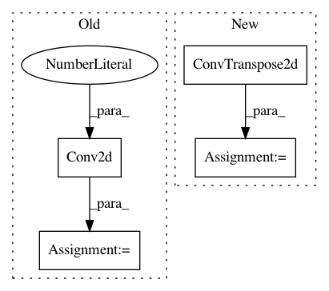

aa26d40a34cfc62cb209bb8c471643e7779e016a,models/networks.py,UnetSkipConnectionBlock,__init__,#UnetSkipConnectionBlock#Any#Any#Any#Any#Any#Any#Any#,258
Before Change
super(UnetSkipConnectionBlock, self).__init__()
self.outermost = outermost
downconv = nn.Conv2d(outer_nc, inner_nc, kernel_size=4,
stride=2, padding=1)
downrelu = nn.LeakyReLU(0.2, True)
downnorm = norm_layer(inner_nc)
uprelu = nn.ReLU(True)
upnorm = norm_layer(outer_nc)
After Change
up = [uprelu, upconv, upnorm]
model = down + up
else:
upconv = nn.ConvTranspose2d(inner_nc * 2, outer_nc,
kernel_size=4, stride=2,
padding=1, bias=use_bias)
down = [downrelu, downconv, downnorm]
up = [uprelu, upconv, upnorm]
if use_dropout:
In pattern: SUPERPATTERN
Frequency: 3
Non-data size: 4
Instances
Project Name: junyanz/pytorch-CycleGAN-and-pix2pix
Commit Name: aa26d40a34cfc62cb209bb8c471643e7779e016a
Time: 2017-08-22
Author: hazirbas@cs.tum.edu
File Name: models/networks.py
Class Name: UnetSkipConnectionBlock
Method Name: __init__
Project Name: osmr/imgclsmob
Commit Name: 9963f2ded56fb471cd0597a3a64e99eaeb0d64ca
Time: 2021-02-11
Author: osemery@gmail.com
File Name: pytorch/pytorchcv/models/others/_linknet.py
Class Name: BasicBlock
Method Name: __init__